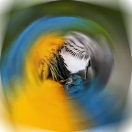

เบลอเลนส์

เบลอแบบหมุนที่เหลือพื้นที่คมรอบศูนย์กลางและเพิ่มขึ้นไปทางขอบ
การตั้งค่า
| การตั้งค่า | ประเภท | ช่วงค่า | ค่าเริ่มต้น |
|---|---|---|---|
| จุดศูนย์กลาง | จุด (X, Y) | -1 ถึง 2 | 0.5, 0.5 |
| มุม | มุม | 0° ถึง 360° | 10° |
| รัศมี | ตัวเลข | 0 ถึง 2 | 0.25 |
| ขอบฟุ้ง | ตัวเลข | 0 ถึง 2 | 0.25 |